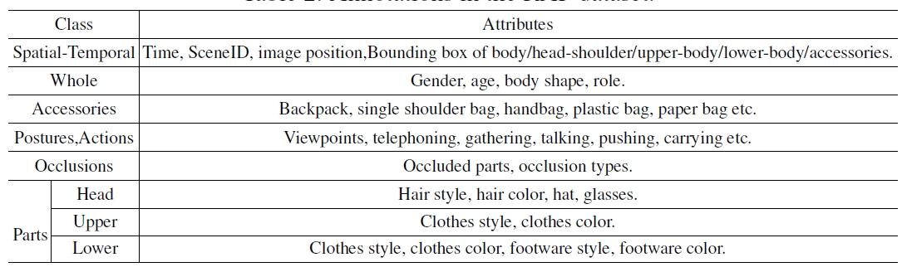

Dangwei Li, Zhang Zhang, Xiaotang Chen, Haibin Ling, Kaiqi Huang

A comparision bewteen Rap dataset and other existing pedestrian attribute datasets.
| Datasets | #Cams | Scene | Annotation unit | #Samples | #Binary attributes | Viewpoint | Occlusion | Part location |
| VIPeR | 2 | outdoor | PID | 1264 | 21 | yes | no | no |
| PRID | 2 | outdoor | PID | 400 | 21 | no | no | no |
| GRID | 8 | outdoor | PID | 500 | 21 | no | no | no |
| APiS | - | outdoor | PI | 3661 | 11 | no | no | no |
| PETA | - | mixture | PID | 19,000 | 61 | no | no | no |
| RAP | 26 | indoor | PI | 41,585 | 69 | yes | yes | yes |